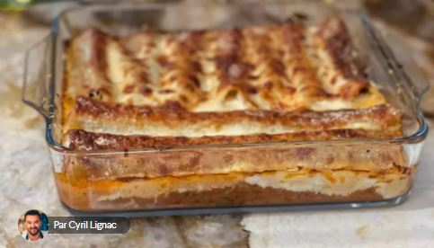

◀ ⎙
Cannellonis farcis à la bolognaise
Pour 4 Personnes,
Temps de préparation : 30 mn,
Temps de cuisson : 20 mn,

testé : n
Ingrédients
- 18 tubes de cannelloni cuits à l’eau et pas rincés puis coupés en 2 dans la largeur
- 400 g de viande hachée de bœuf
- 1 gousse d’ail épluchée
- ½ oignon épluché et ciselé
- 1 carotte épluchée et coupée en cubes
- 150 g de champignons de Paris équeutés, lavés et émincés
- 1 peu de thym frais
- 25 cl de vin rouge
- 500 g de coulis de tomates ou concassé de tomate
- 20 cl de crème liquide entière
- 200 g de parmesan râpé
- 1 morceau de parmesan à râper ou autre fromage à râper
- Sel fin et poivre du moulin
- 1 cuil. à café de gros sel
- 3 brins de basilic
Préparation
- Préchauffez le four à 200°C.
- Dans une casserole, versez un trait d’huile d’olive, ajoutez l’oignon ciselé, faites revenir, ajoutez les carottes, mélangez avec les champignons.
- Ajoutez la viande, en la faisant bien sauter.
- Assaisonnez de sel et poivre, ajoutez l’ail, le basilic.
- Laissez cuire 5 à 6 minutes.
- Attention à ne pas trop caraméliser.
- Déglacez au vin rouge, ajoutez le thym et la sauce tomate.
- Laissez cuire le plus longtemps possible à feu très doux.
- Dans une casserole, versez la crème et laissez-la bouillir quelques minutes.
- Ajoutez le parmesan râpé.
- Laissez de côté, surtout pas au frais.
- Versez la farce dans une poche, déposez dans le plat les cannellonis droits et farcissez-les de bolognaise. Nappez de crème parmesan et râpez un peu de parmesan par-dessus.
- Déposez au four 20 minutes et laissez griller légèrement sur le dessus.
Remarques
de Cyril Lignac